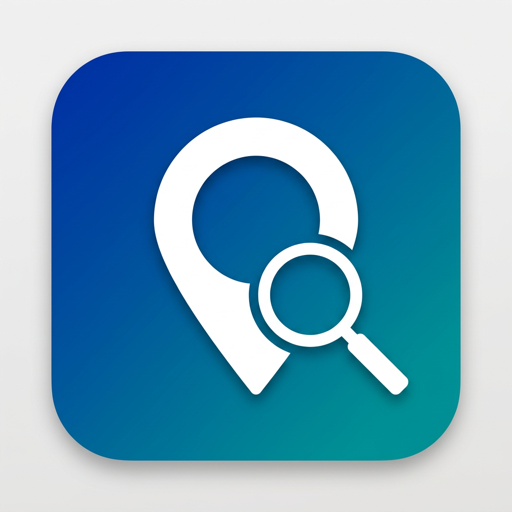

Extract business leads from Google Maps — right from your desktop. Fast, private, no API key needed.
Adaptive grid covers any area — city block or entire region.
Scrapes emails from business websites automatically.
Collect ratings and review counts for lead qualification.
Rotate proxies to avoid rate limits on large scrapes.
One-click export to CSV — ready for your CRM.
Runs locally. Your data never leaves your machine.